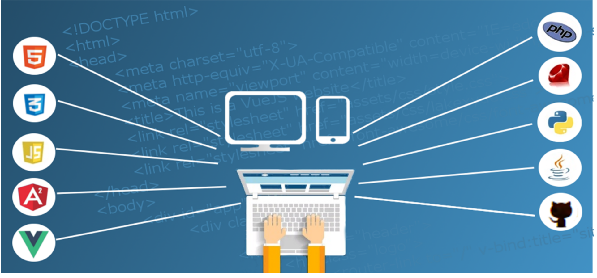

About Front-End Development
Front-end development is the practice of producing HTML, CSS, and JavaScript for a website or web application so that a user can see and interact with them directly. A front-end developer is responsible for the look, feel, and interactive elements of a website.
HTML Basics
HTML is a markup language that's used to structure and create content on the web. It's not a programming language, but instead annotates text to define how it's displayed and structured by web browsers.
CSS Styling
CSS (Cascading Style Sheets) is a language designed to simplify the process of making web pages presentable. It allows you to apply styles to HTML documents, describing how a webpage should look by prescribing colors, fonts, spacing, and positioning. CSS provides developers and designers with powerful control over the presentation of HTML elements.

JavaScript Interactivity
JavaScript is a lightweight programming language commonly used by web developers to add dynamic interactions to web pages, applications, servers, and even games. It works seamlessly alongside HTML and CSS, complementing CSS in formatting HTML elements while providing user interaction, a capability that CSS alone lacks.